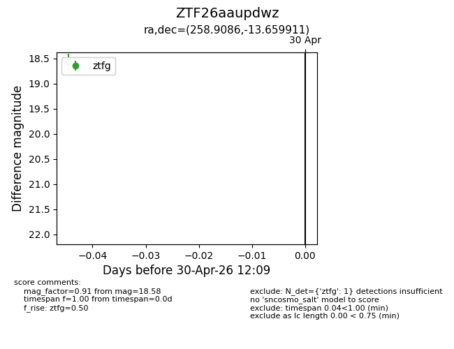
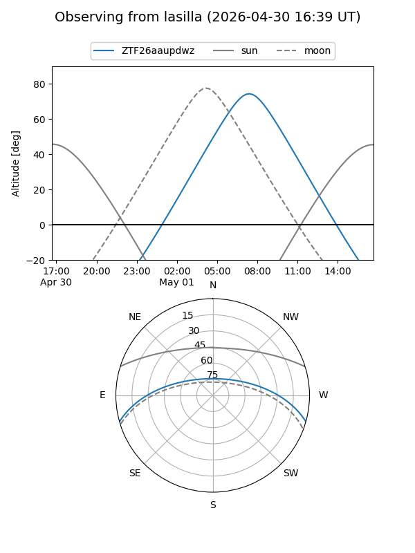
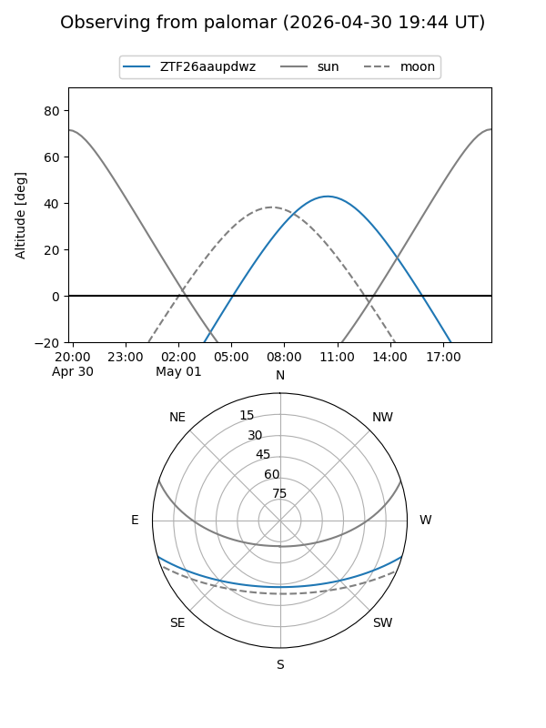

ZTF26aaupdwz
Target ZTF26aaupdwz at 2026-04-30 12:14
Aliases and brokers:
FINK: link
Lasair: link
ALeRCE: link
alt names
ZTF26aaupdwz (ztf,fink_ztf)
Coordinates:
equatorial (ra, dec) = 258.9086,-13.65991
equatorial (HMS+DMS) = 17:15:38.06,-13:39:35.68
galactic (l, b) = (9.2197,+14.08673)
Flags:
Photometry:
last ztfg=18.58
1 ztfg detections
Lightcurve

Visibility


Additional plots